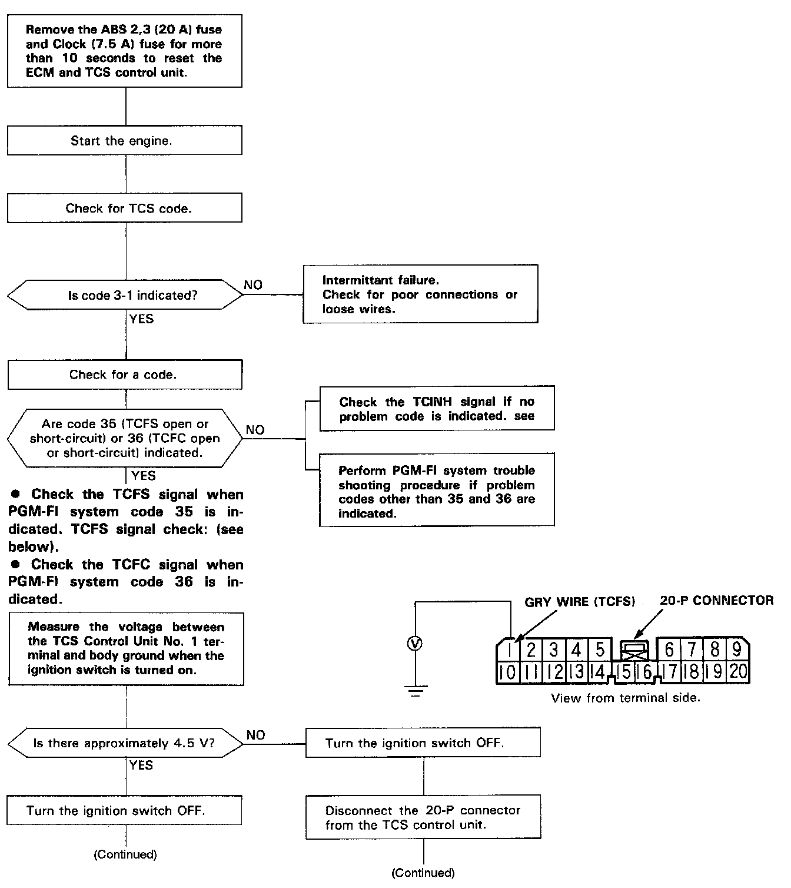
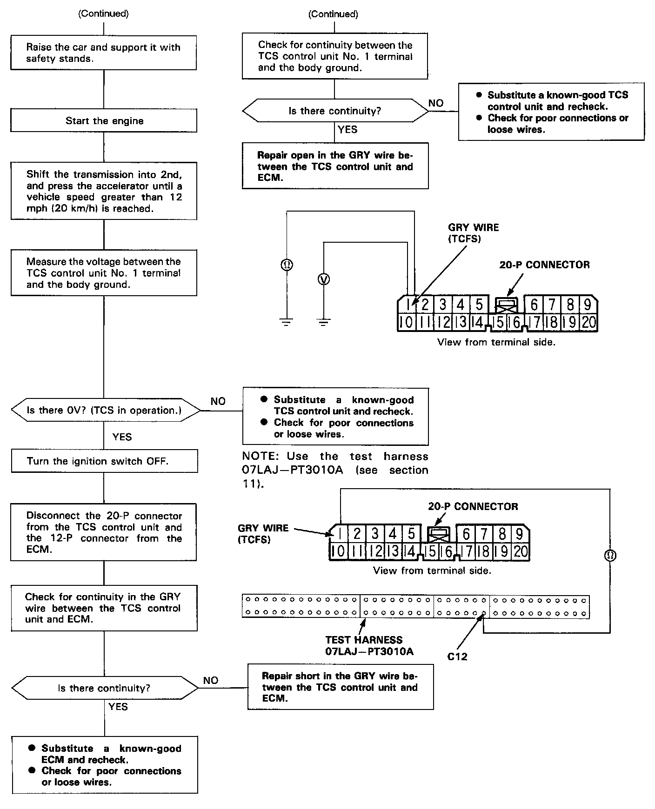
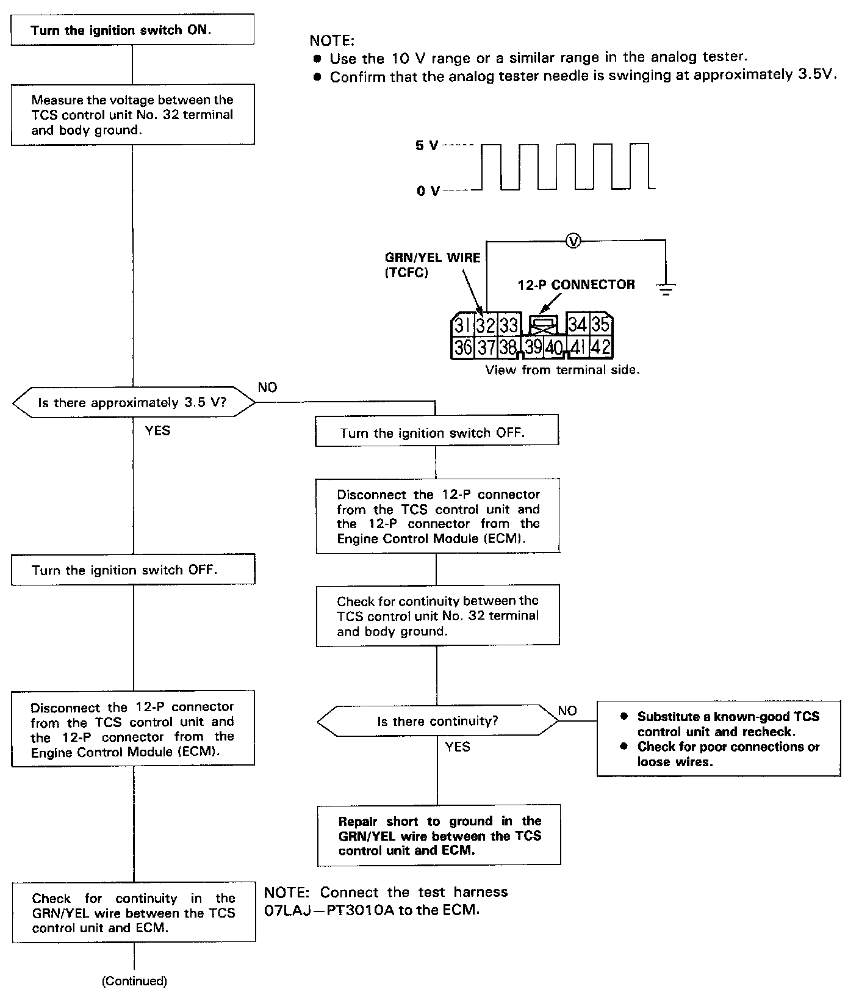
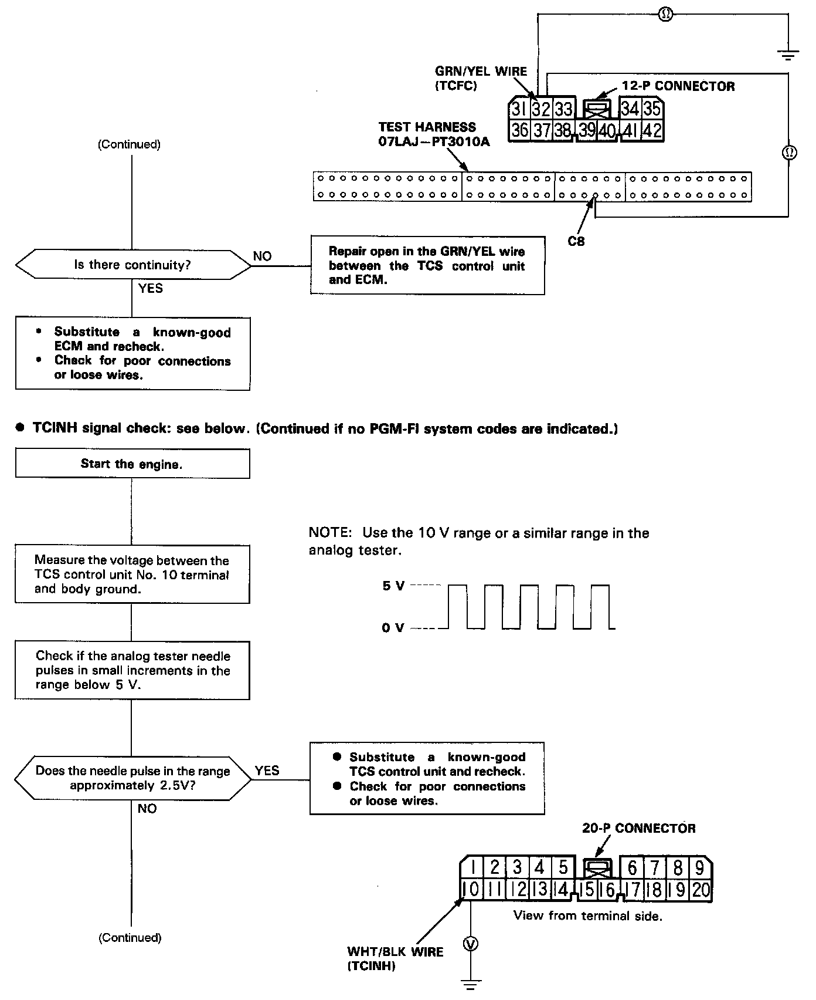
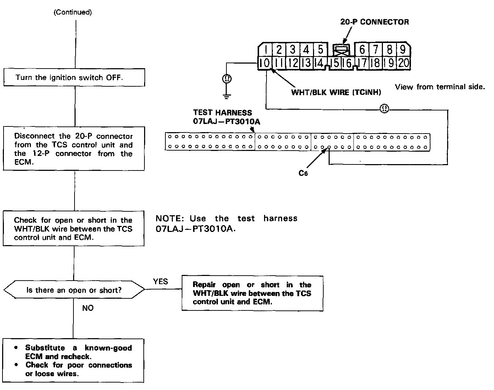

DTC 3-1
Diagnostic Flowchart - Part 1:

Part 2:

NOTE: The Engine control Module (ECM) outputs the TC/NH signal to the TCS control unit when the correct TCFS signal and TCFC signal have been input to it from the TCS control unit.
Diagnostic Flowchart - Part 1:

Part 2:

Part 3:

TCFC and TC/NH signal check (Continued from above flowchart.)